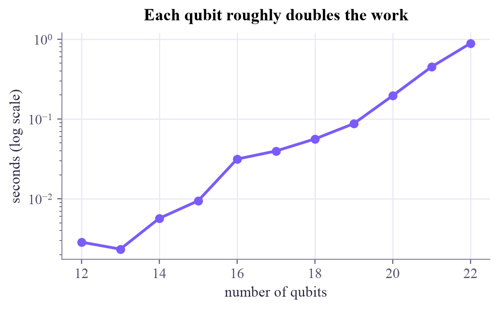

┌───┐
q_0: ┤ H ├──■───────
└───┘┌─┴─┐
q_1: ─────┤ X ├──■──
└───┘┌─┴─┐
q_2: ──────────┤ X ├
└───┘
{'000': 0.5, '111': 0.5}
Quantum Computing
 about 10 min
about 10 min qc-w4d4.ipynb
qc-w4d4.ipynb
Many qubits: GHZ and the exponential wall
Three, ten or fifty qubits that are all 0 or all 1 together, and a quick count of why ordinary computers can't keep up.
In this lesson you will
- Build GHZ states on any number of qubits with H and a chain of CNOTs
- Count the cost of writing a state down: amplitudes for qubits
- See which states stay cheap (products) and where the difficulty comes from
Warm-up
1 minFrom pairs to crowds

Bell states tie two qubits together. Nothing stops you from tying three, ten or fifty. Today you'll build such crowds, and then do a little arithmetic that explains, in one line, why people build quantum computers at all.
Big idea
4 minGHZ, and counting amplitudes
The GHZ state (after Greenberger, Horne and Zeilinger) generalizes to qubits:
The recipe: H on qubit 0, then a CNOT from each qubit to the next. Measure any single qubit, and you instantly know what all the others will show.
Now count. One qubit has 2 amplitudes, two have 4, and qubits have . Stored as complex numbers of 16 bytes each:
| qubits | amplitudes | memory |
|---|---|---|
| 10 | 1,024 | 16 KB |
| 30 | about a billion | 16 GB, a laptop |
| 45 | about 35 trillion | 0.5 PB, a big supercomputer |
| 300 | more than atoms in the visible universe | impossible |
Every extra qubit doubles the work of a classical simulation. A quantum computer just adds one more qubit.
Two honest footnotes. First, not every state is expensive: a product state of qubits needs only numbers, and states with little entanglement can be compressed cleverly. The expense comes from entanglement. Second, a big state is not automatically a fast algorithm: you only get to read out a few bits per shot. Turning the size into speed takes interference, which is next week's story.
Play
3 minCrowds of qubits
Build GHZ states on three qubits (tap the control wire first for CNOT):
And feel the wall:
Try this
In the GHZ lab, measure 100 shots: only all-equal strings appear, and each qubit's Bloch arrow shrinks to nothing. On the wall, find the first that doesn't fit in a laptop.
Code
2 minMany qubits in Qiskit
The notebook for this lessonEvery code cell below, with what it printed, is in
qc-w4d4.ipynb. To change the code and run it yourself, open the notebook in Google Colab (free, in your browser) or download it for your own Jupyter.import time
import numpy as np
from qiskit import QuantumCircuit
from qiskit.quantum_info import Statevector
from qiskit.primitives import StatevectorSampler
def ghz(n):
"""H on qubit 0, then a chain of CNOTs: (|00...0> + |11...1>)/sqrt(2)."""
qc = QuantumCircuit(n)
qc.h(0)
for q in range(n - 1):
qc.cx(q, q + 1)
return qc
print(ghz(3).draw("text"))
print({str(k): round(float(v), 3) for k, v in Statevector(ghz(3)).probabilities_dict().items()})What it printed in the notebook
qc = ghz(10)
qc.measure_all()
counts = StatevectorSampler(seed=2).run([qc], shots=1000).result()[0].data.meas.get_counts()
print(counts)
print("gates:", ghz(10).size(), " depth:", ghz(10).depth())What it printed in the notebook
{'0000000000': 503, '1111111111': 497}
gates: 10 depth: 10def human(nbytes):
for unit in ["bytes", "KB", "MB", "GB", "TB", "PB", "EB", "ZB", "YB"]:
if nbytes < 1024:
return f"{nbytes:,.0f} {unit}"
nbytes /= 1024
return f"{nbytes:,.0f} more than YB"
for n in [10, 20, 30, 40, 50, 60]:
print(f"{n:2d} qubits: {2 ** n:>22,d} amplitudes = {human(16 * 2 ** n):>12}")What it printed in the notebook
10 qubits: 1,024 amplitudes = 16 KB 20 qubits: 1,048,576 amplitudes = 16 MB 30 qubits: 1,073,741,824 amplitudes = 16 GB 40 qubits: 1,099,511,627,776 amplitudes = 16 TB 50 qubits: 1,125,899,906,842,624 amplitudes = 16 PB 60 qubits: 1,152,921,504,606,846,976 amplitudes = 16 EB
import matplotlib.pyplot as plt
ns, secs = list(range(12, 23)), []
for n in ns:
t0 = time.perf_counter()
Statevector(ghz(n))
secs.append(time.perf_counter() - t0)
plt.figure(figsize=(6, 3.2))
plt.semilogy(ns, secs, "o-", color="#7b5cfa")
plt.xlabel("number of qubits")
plt.ylabel("seconds (log scale)")
plt.title("Each qubit roughly doubles the work")
plt.show()What it printed in the notebook

Your turn
3 minYour turn: a faster GHZ
The chain of CNOTs takes steps, one after another. But once two qubits share the GHZ, both can pass it on at the same time. Build an 8-qubit GHZ with depth 4 (one H, then three layers of CNOTs) and check it equals the chain's state.
fast = QuantumCircuit(8)
fast.h(0)
# TODO: layer 1: 0->1; layer 2: 0->2, 1->3; layer 3: 0->4, 1->5, 2->6, 3->7
print("depth:", fast.depth(), " same state as the chain?", Statevector(fast).equiv(Statevector(ghz(8))))Need a hint?
Layer 1: 0→1. Layer 2: 0→2 and 1→3. Layer 3: 0→4, 1→5, 2→6, 3→7. Gates on different qubits run in parallel, so each layer adds depth 1.
Show a solution
fast = QuantumCircuit(8)
fast.h(0)
fast.cx(0, 1)
for c, t in [(0, 2), (1, 3)]:
fast.cx(c, t)
for c, t in [(0, 4), (1, 5), (2, 6), (3, 7)]:
fast.cx(c, t)
print(fast.draw("text"))
print("depth:", fast.depth(), " same state as the chain?", Statevector(fast).equiv(Statevector(ghz(8))))
print("The number of qubits in the GHZ doubles every layer, so n qubits need only about log2(n) layers.")What it printed in the notebook
┌───┐
q_0: ┤ H ├──■────■─────────■─────────────────
└───┘┌─┴─┐ │ │
q_1: ─────┤ X ├──┼────■────┼────■────────────
└───┘┌─┴─┐ │ │ │
q_2: ──────────┤ X ├──┼────┼────┼────■───────
└───┘┌─┴─┐ │ │ │
q_3: ───────────────┤ X ├──┼────┼────┼────■──
└───┘┌─┴─┐ │ │ │
q_4: ────────────────────┤ X ├──┼────┼────┼──
└───┘┌─┴─┐ │ │
q_5: ─────────────────────────┤ X ├──┼────┼──
└───┘┌─┴─┐ │
q_6: ──────────────────────────────┤ X ├──┼──
└───┘┌─┴─┐
q_7: ───────────────────────────────────┤ X ├
└───┘
depth: 4 same state as the chain? True
The number of qubits in the GHZ doubles every layer, so n qubits need only about log2(n) layers.Check yourself
2 minQuick check
Question 1 of 3
You measure qubit 2 of a three-qubit GHZ state and get 1. What will qubits 0 and 1 show?
Question 2 of 3
How many amplitudes describe 20 qubits?
Question 3 of 3
Which 50-qubit state is cheap to store on a laptop?
Wrap-up
1 minToday in one sentence
Machine-learning link
This exponential space is the big promise of quantum machine learning: a feature map can place data into a -dimensional space with just qubits. Whether that space actually helps a model learn is one of the field's central questions, and you'll meet both the hope and the catch.
Go deeper (optional)
Preskill's essay "Quantum computing in the NISQ era and beyond" (Quantum, 2018) explains, without heavy maths, where the line between classically simulable and genuinely quantum lies today.
Next in Quantum Computing: observables and expectation values, the numbers quantum models actually output.

That's the lesson!
Tap the button to save it. Short and steady wins.
Marked by mistake? Undo